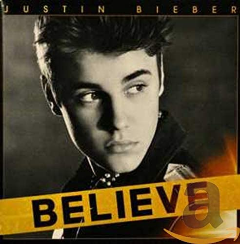
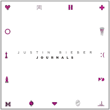

Historia
Justin Drew Bieber nació el 1 de marzo de 1994 en el St.Joseph's Hospital, en London, Canadá. Poco después se trasladaría a Stratford, Ontario, Canadá, ciudad donde creció.
Hijo único de Jeremy Jack Bieber, un carpintero practicante de artes marciales, y de Patricia Mallette. Sus progenitores nunca se casaron.
Por parte de padre tiene dos medios hermanos más jóvenes, Jasmyn (nacido en 2009) y Jaxon (nacido en 2010). La primera palabra que dijo fue Momma.
Su progenitora le crio con la ayuda de su abuela Diane, y su padrastro, Bruce. Su madre fue empleada en trabajos de baja remuneración. Bieber mantuvo contacto con su padre.
Creció en la ciudad de Stratford, Ontario. Desde muy niño sintió interés por el mundo de la música, aprendiendo a tocar de manera autodidacta el piano, la batería, la guitarra y la trompeta.
Cuando Justin Bieber tenía doce años se presentó a un concurso de canto en Stratford quedando en segundo lugar. Su madre subió a YouTube el video de la actuación para sus familiares, y progresivamente, fue añadiendo más videos de interpretaciones de su hijo. Dos años después de su primer video, tenía 90.000 suscriptores en su canal. Casualmente un ejecutivo llamado Scooter Braun, vio uno de sus videos de 2007 en Internet mientras buscaba videos de otro artista musical. Se puso en contacto con Justin y juntos viajaron a Atlanta, Georgia. Allí se reunieron con el compositor y cantante de R&B, Usher. Justin cantó para él y Usher le consiguió una audición para Island Records, discográfica que le contrató en octubre de 2008.
Discografía
- Baby
- Somebody to Love
- Stuck in the Moment
- U Smile
- Runaway Love
- Never Let You Go
- Overboard
- Eenie Meenie
- Up
- That Should be me
My World
- All Around The World
- Boyfriend
- As Long As You Love Me
- Catching Feelings
- Take You
- Right Here
- Fall
- Beauty And A Beat
- One Love
- Believe
Believe
- Heartbreaker
- All That Matters
- Recovery
- Change Me
- Confident
- One Life
- Backpack
- What's Hatnin
- Swap It Out
- Memphis
Journals
- Mark My Words
- I'll Show You
- What Do You Mean?
- Sorry
- Love Yourself
- Company
- No Pressure
- Where Are Ü Now?
- Purpose
- We Are
Purpose
- All Around Me
- Habitual
- Come Around Me
- Intentions
- Yummy
- Forever
- Changes
- Confirmation
- That's What Love Is
- At Least For Now